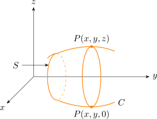
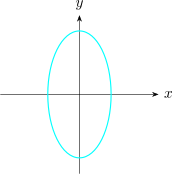

2.1 Surface of Revolution
A surface of revolution is obtained by revolving a plane curve \(C\) about a line in its plane, the axis of revolution. Each point of \(C\) traces out a circle centred on the axis and perpendicular to it.

Let \(C\) be the curve \(f(y,z) = 0\) in the \(yz\)-plane, with \(y\geq 0\) on \(C\), and revolve it about the \(z\)-axis. A point \(P(x,y,z)\) lies on the resulting surface \(S\) exactly when its distance from the \(z\)-axis, \(\sqrt {x^2 + y^2}\), is the \(y\)-coordinate of a point of \(C\) at the same height \(z\). Hence \[P(x,y,z)\ \text {lies on}\ S \iff f\left (\sqrt {x^2 + y^2},\, z\right ) = 0 .\] To find an equation for \(S\), replace the coordinate measuring distance from the axis by the distance \(\sqrt {x^2 + y^2}\) from the axis, and leave the coordinate along the axis unchanged. The same rule applies to any axis:
- \(-\)
- about the \(z\)-axis, \(f(y,z) = 0\) becomes \(f\left (\sqrt {x^2+y^2},\,z\right ) = 0\);
- \(-\)
- about the \(y\)-axis, \(f(x,y) = 0\) becomes \(f\left (\sqrt {x^2+z^2},\,y\right ) = 0\);
- \(-\)
- about the \(x\)-axis, \(f(x,y) = 0\) becomes \(f\left (x,\,\sqrt {y^2+z^2}\right ) = 0\).
If \(C\) has points on both sides of the axis, replace the distance coordinate by \(\pm \sqrt {\cdots }\); when it appears only squared, as is usual, the sign does not matter.
Example 2.1.1. The ellipse \(9x^2 + 4y^2 = 36\) in the \(xy\)-plane is revolved about the \(y\)-axis. Find an equation for the resulting surface.

Revolving about the \(y\)-axis, \(y\) is unchanged and \(x\) is replaced by \(\sqrt {x^2 + z^2}\): \[9\left (\sqrt {x^2 + z^2}\right )^2 + 4y^2 = 36,\qquad \text {that is}\qquad 9x^2 + 4y^2 + 9z^2 = 36 .\] The surface is an ellipsoid with circular cross-sections \(y = k\), an ellipsoid of revolution.
Example 2.1.2. Find a generating curve and the axis of revolution for the surface \(x^2 + 3y^2 + z^2 = 9\).
Solution. The coefficients of \(x^2\) and \(z^2\) are equal, so write \[x^2 + z^2 = 9 - 3y^2 .\] The left side is the square of the distance from the \(y\)-axis, so the surface is obtained by revolution about the \(y\)-axis. A generating curve is the trace in any plane through the axis: for example the ellipse \(x^2 + 3y^2 = 9\) in the \(xy\)-plane (with \(z = 0\)), or the ellipse \(3y^2 + z^2 = 9\) in the \(yz\)-plane (with \(x = 0\)).
Example 2.1.3. Find the surface obtained by revolving the line \(z = 2y\), \(y\geq 0\), in the \(yz\)-plane about the \(z\)-axis.
Solution. Replace \(y\) by \(\sqrt {x^2 + y^2}\): \(z = 2\sqrt {x^2 + y^2}\), or, squaring, \(z^2 = 4(x^2 + y^2)\) with \(z\geq 0\). It is the upper half of a circular cone with vertex at the origin, the cone of the table above with \(a = b = 1\), \(c = 2\).
Example 2.1.4. The circle \((y - 3)^2 + z^2 = 1\) in the \(yz\)-plane is revolved about the \(z\)-axis. Find an equation for the surface, a torus.
Solution. The circle lies in \(y\geq 2\), so replacing \(y\) by \(\sqrt {x^2 + y^2}\) gives \[\left (\sqrt {x^2 + y^2} - 3\right )^2 + z^2 = 1 .\] This is not a quadric: clearing the root gives an equation of degree four, \((x^2 + y^2 + z^2 + 8)^2 = 36(x^2 + y^2)\).
Questions on this section
Stuck on something here? Ask below and it stays attached to this topic.